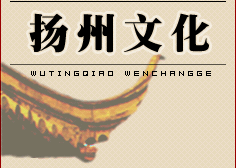
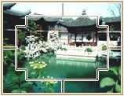
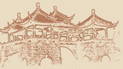
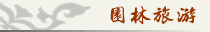

扬州瘦西湖
扬州八怪
扬州园林
扬州美女
扬州三把刀
烟花三月下扬州
网站首页
园林旅游
传统文化
古典文化
思想学派
维扬美食
线代扬州
烟花三月
雁过留声
古典
园林
运河
审美
更多>>



您的位置：
网站首页
>>
园林旅游
 /////
卢氏盐商住宅与古巷风韵
扬州蜀岗瘦西湖景区
扬州 寄啸山庄
井口瓜州一水间 钟山只隔数重山之后丢失省略号
吴道台宅第与朱自清故居
扬州八怪纪念馆
古巷风情游所领略的故扬州独特韵味
新渡江桥为扬州桥梁建筑增色
扬州文峰塔与文风古寺介绍
高旻寺及与其相隔一水的普光明殿
近期开发的生态旅游区-凤凰岛
扬州茱萸湾公园成为市民休闲的又一好去处
扬州平山堂与鉴真大师的渊源
扬州个园的园林特色简介
古运河的古老风情与现代航运价值
共X页 第X页
最前页
上一页
下一页
最末页
>
网站首页
园林旅游
传统文化
古典文化
思想学派
维扬美食
线代扬州
烟花三月
雁过留声
网站首页
园林旅游
传统文化
古典文化
思想学派
维扬美食
线代扬州
烟花三月
雁过留声
网站首页
园林旅游
传统文化
古典文化
思想学派
维扬美食
线代扬州
烟花三月
雁过留声